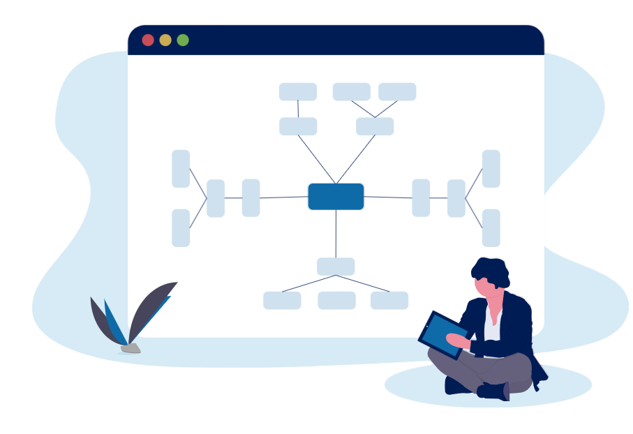

Projects
Below are a selection of my key projects—ranging from agentic systems and LLM integration to mobile healthcare and accessibility solutions—each driven by deep technical design, impact, and deployment readiness.
Below are a selection of my key projects—ranging from agentic systems and LLM integration to mobile healthcare and accessibility solutions—each driven by deep technical design, impact, and deployment readiness.
End-to-end AI-powered bill payment assistant leveraging LangChain Agents, Claude 3.7, Mistral-7B, and orchestrated workflows using buffer/entity memory for secure and contextual financial execution. Features MFA flows and modular agent collaboration with Streamlit frontend.
Cross-platform (iOS/Android) app with CNN-based lung nodule detection, integrated with Grad-CAM visualizations and TFLite backend for real-time diagnosis. Built using SwiftUI, Kotlin, and compliant with healthcare data standards.
Designed a DeBERTa-v3 based fact-checking cross-encoder achieving 85% F1 on Facebook Fact Checking Dataset. Augments chatbot pipelines by detecting hallucinations and flagging inconsistent outputs during inference.
Built an encoder-decoder neural architecture for segmenting noisy bird song recordings, outperforming SOTA methods with 66.24 IoU. Applied in ecological acoustic monitoring and conservation analytics.
Developed a Python-based interface to translate FSR402 sensor signals into gesture classification outputs for users with speech/mobility impairments. Enables basic communication through pressure-triggered hand gestures.